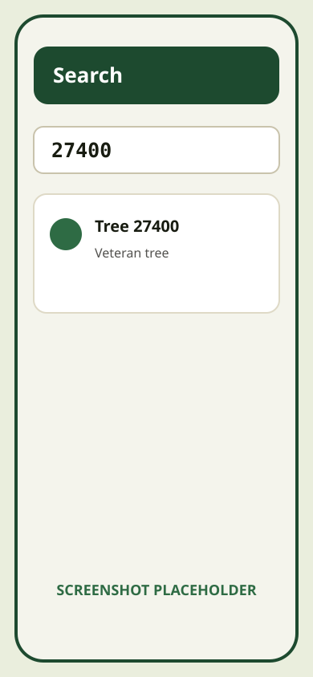
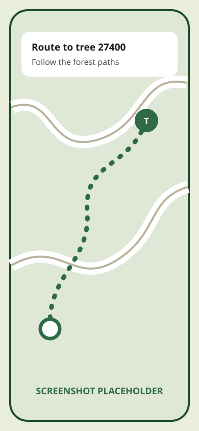
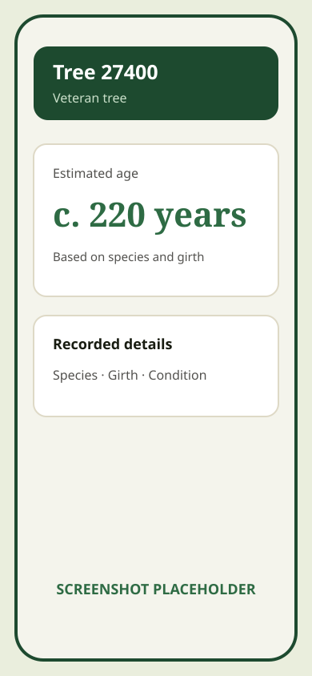

Works where your phone doesn't
Download the map once, over wi-fi or signal. After that it is on your device: every tree, path and landmark, with no network needed. Walk into the middle of the forest and it keeps working.
Epping Forest, offline
A free, offline map of Epping Forest — 24,906 veteran trees, ready to discover. Find a tree by its tag number, navigate to it and see its estimated age. Paths, pubs, facilities and grazing cattle are on the map too.
Alpha invitations aren’t open yet. Sign up to be among the first to hear about the release and receive major updates about the app.

Download the map once, over wi-fi or signal. After that it is on your device: every tree, path and landmark, with no network needed. Walk into the middle of the forest and it keeps working.
All 24,906 trees from the Epping Forest Veteran Tree Register, each one placed on the map with its species and record. Search by the number on a tree’s physical tag to find that specific tree and explore its estimated age.
Epping Forest's grazing cattle wear GPS collars. The map shows their latest reported positions. Cows move around, so the app periodically makes a network request for up-to-date locations. Offline, you’ll see the last saved positions.
Those numbered tags connect the trees around you to the Veteran Tree Register. Look up a tree you’ve spotted, or choose a specific one to find on your next walk.




Everything the app can show you, counted and grouped exactly the way the app's own filters group it.
Field notes · Published weekly
A weekly write-up of what has changed in the forest — new records, the cattle, the seasons, and what the data shows.
Read the Ledger →Stay in the loop
Alpha invitations aren’t open yet. Leave your email to be among the first to hear about the release and when invitations open. You’ll also receive major updates about the app and weekly Epping Forest Ledger updates once the site launches.